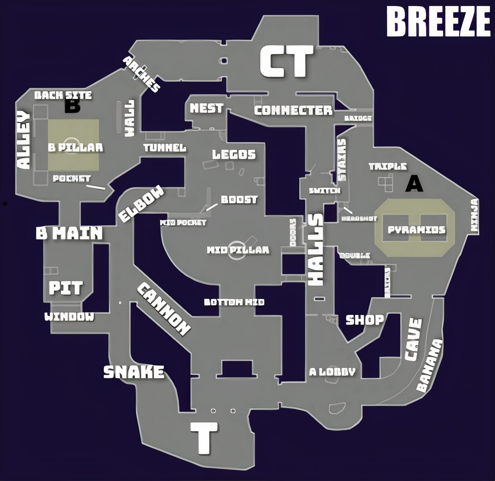
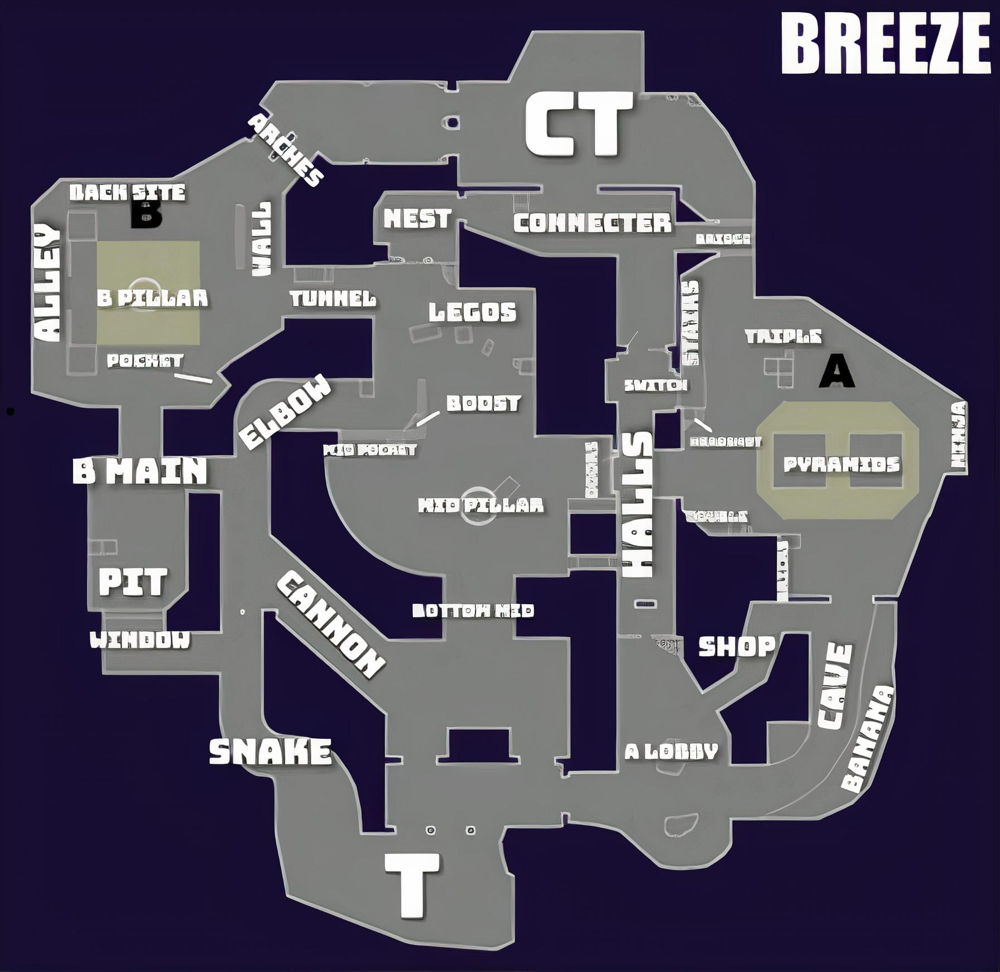

Vítej na mapě Breeze! Zde jsou základní informace o mapě
Mapa Breeze se nachází na malém ropném ostrově a také hráče oslňuje nádherným prostředím. Mapa je jedna z nejzajímavějších kvůli tomu, že obsahuje již 2 již zmíněné mechaniky a to zavírací obrněné dveře na páčku a úplně novou funkci otevírací ventilace pro lepší rotace obou týmů.
 
